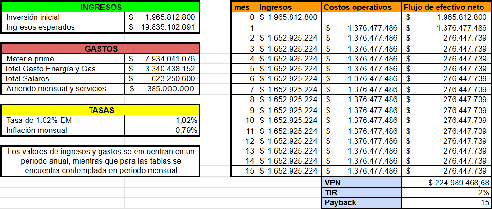

Evaluación Económica de Proyectos
Estamos proyectando una inversión inicial de $1.628.968.000 para un proyecto con ingresos esperados de $22.106.252.489 anuales. Los gastos incluyen materia prima ($8.842.500.996), energía ($5.189.065.581), salarios ($623.250.600), y arriendo y servicios ($385.000.000). Mensualmente, generaremos ingresos de $1,842,187,707 con costos operativos de $1,587,557,715, resultando en un flujo neto de $254,629,993. Con una tasa de interés del 4.6% y una inflación del 5%, el Valor Presente Neto (VPN) es $87,248,857.13 y la Tasa Interna de Retorno (TIR) es del 5%. Recuperaremos nuestra inversión inicial en 22 meses.
Evaluación Económica del Proyecto de Baldosas Cerámicas
Costos de desarrollo
Cabe recordar que se realizó un pronostico de producción de 700.000 m2 mensuales y al producir unicamente 3 referencias del mercado tenemos que:

Costos operativos
Los principales gastos mensuales operativos corresponden a la energía ($5.189.065.581), salarios ($623.250.600) y el arriendo mensual de la planta ($385.000.000).

Costos de instalación
El proyecto de automatización de producción de baldosas cerámicas, se requiere una inversión inicial de $1.626.968.000. Esta inversión corresponde a la nueva maquinaria especial para automatizarse, el diseño de una celda robótica para el paletizado y una pequeña inversión para la adecuación del espacio para su instalación

Marketing y ventas
Esperamos generar ingresos anuales de $22.106.252.489 a lo largo del proyecto. Para esto nos guiaremos de mercancía de cerámica para la venta en almacenes de construcción. Las referencias que manejaremos se pueden vender en un valor menor a la mitad de la venta de los distribuidores directamente al cliente consumidor.
Durante el primer mes, incurriremos en un costo operativo negativo debido a la inversión inicial y los gastos operativos, en donde la producción parará completamente mientras se realiza la instalación de equipos y su respectiva remodelación. A partir del segundo mes, esperamos ingresos mensuales de $1.842.187.707 contra costos operativos de $ 1.606.234.765 , resultando en un flujo de efectivo neto positivo de $254,629,993 mensuales. Con estos flujos de efectivo, calculamos un Valor Presente Neto (VPN) de $ 72.884.677 y una Tasa Interna de Retorno (TIR) del 4%. Según nuestras proyecciones, recuperaremos nuestra inversión inicial en aproximadamente 25 meses.
Análisis de Mercado
En Colombia, la industria de la producción de cerámicos enfrenta un panorama complejo para el año 2024.
Según la ANDI, durante el periodo comprendido entre 2010 y 2015, se registró un crecimiento anual estimado del 4.6%, mientras que en 2019 se experimentó un notable aumento del 13.8% respecto al año base de 2015, alcanzando una producción de 94'319.298 metros cuadrados. Sin embargo, la irrupción de la pandemia de COVID-19 en 2020 impactó negativamente en la producción, ocasionando una disminución promedio del 5%.

Además, en un nuevo informe de la ANDI, el sector de la construcción ha sufrido una notable caída del 46% en sus ventas desde el año 2020, influenciada por los factores del mercado inmobiliario y las tasas de interés. Este contexto desafiante se ve reflejado en las ventas actuales, que se asemejan a las cifras reportadas en 2013, evidenciando una situación de incertidumbre en el mercado de cerámicos.
Si tomamos como base una línea de producción con prensa trabajando 3 turnos de 8 horas, 24 días al mes durante los doce meses con una eficiencia del 80%, se tiene un estimado de producción de 15.482.600 metros cuadrados equivalente a un 20.7% de la producción total nacional.